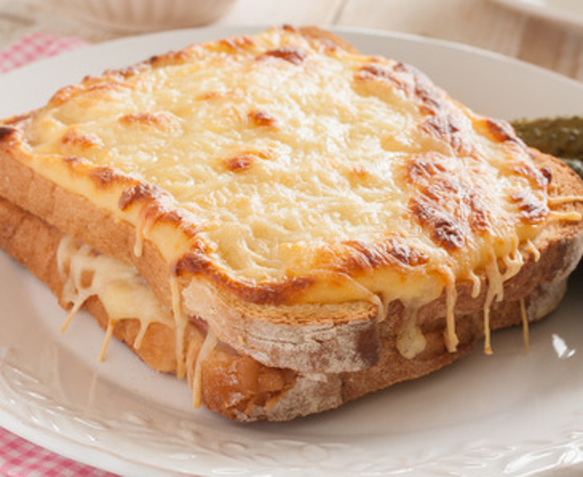

Le Croque-Monsieur

Ingrédients
- 8 tranches de pain mie
- 50g de beurre tendre
- 100g de gruyère râpé
- 4 cuillères à soupe de lait
- 1 pincée de muscade
- poivre
- sel
- 4 tranches de jambon
- 8 tranches de toatinette
Préparation
- Etape 1: Beurrez les 8 tranches de pain de mie sur une seule face. Posez 1 tranche de fromage sur chaque tranche de pain de mie. Posez 1 tranche de jambon plié en deux sur 4 tranches de pain de mie. Recouvrez avec les autres tartines (face non beurrée au dessus).
- Etape 2: Dans un bol mélanger le fromage râpé avec le lait, le sel, le poivre et la muscade.
- Etape 3: Répartissez le mélange sur les croque-monsieur.
- Etape 4: Placez sur une plaque au four sous le grill pendant 10 mn.
Retour à l'accueil